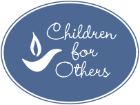
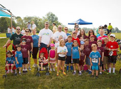

|
|
In a society that's becoming increasingly self-centered and isolated, Harmony parents sometimes feel like they are fighting against the tide when they try to raise their children to be generous, selfless, and kind to those in need. That's why we started "Children for Others," a coordinated effort between Harmony's Outreach and Religious Exploration programs. How do our kids work towards becoming Children for Others?
Kids who have worked on our outreach events have honed their writing, public speaking, math, and entrepreneurial skills. Even more importantly, they are developing an understanding that even the youngest members of society can and should dedicate their time toward making a difference.  |

|